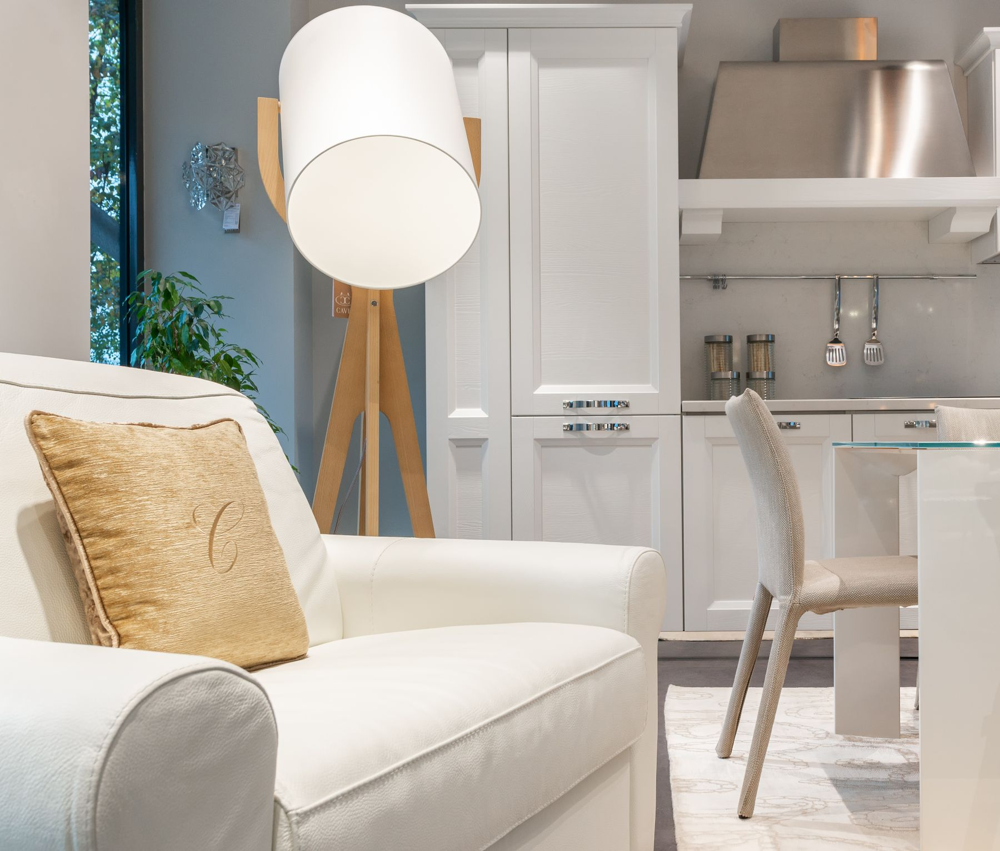
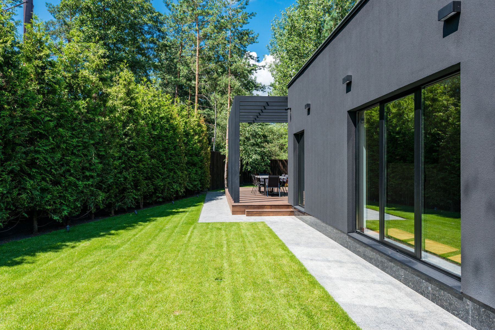
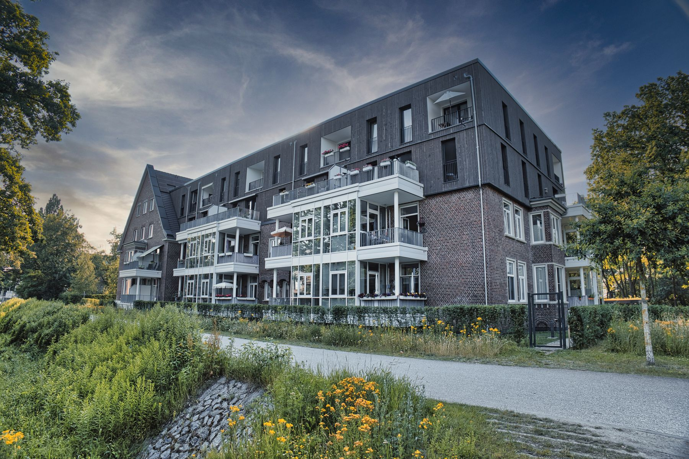
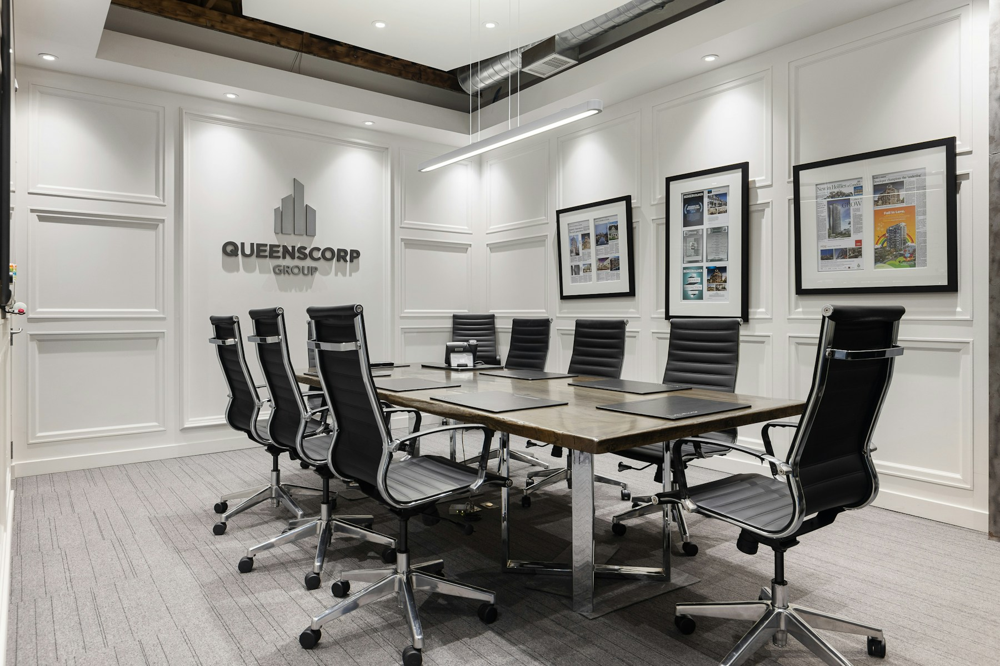
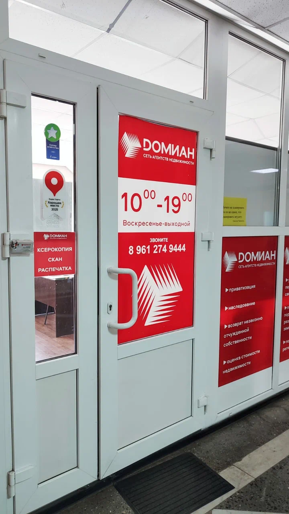

Домиан · Новочеркасск
Недвижимость Новочеркасска
Квартиры, дома, участки и коммерческие объекты — с пониманием районов Новочеркасска, проверкой важного и сопровождением сделки.
Народная ул., 1 · офис 114 · +7 938 154-95-15


01 / Объекты и задачи
Выберите свой сценарий
Выберите близкий сценарий. Мы уточним район, бюджет, сроки и важные условия — без случайной ленты предложений.
Получить консультацию
Частный сектор
Дом или участок
Частный сектор, участки, дома для жизни или переезда. Смотреть направление
Первичный рынок
Новостройка
Помогаем сравнить планировки, документы и условия покупки. Сравнить варианты
Задача собственника
Продажа, оценка или коммерция
Разберём объект, документы, позиционирование и первый шаг. Обсудить продажу
Личный стандарт собственника
Личный контроль ключевых этапов
Собственник офиса участвует в важных решениях, чтобы задача клиента не терялась между подбором, проверкой документов и сопровождением.
Разбор задачи до подбора
Определяем цель, сроки, бюджет и ограничения.
Проверка района и документов
Смотрим на объект вместе с локацией и условиями сделки.
Понятный маршрут сделки
Заранее объясняем действия, документы и следующий шаг.
02 / Локальный выбор
Районы и направления Новочеркасска
Объект невозможно оценить отдельно от окружения. Сопоставляем формат жизни, транспорт, тип застройки и задачу покупки.
Центр и старый город
Квартиры, аренда и коммерция рядом с главными городскими осями.
Семейный выборВосточный и Молодёжный
Жилые микрорайоны, повседневная инфраструктура и понятная логистика.
Обособленный микрорайонДонской
Самостоятельная жилая среда примерно в 15 км от основной части города.
Земля и пространствоЧастный сектор и участки
Хотунок, Новосёловка, СНТ и другие локальные сценарии.
Городские кварталыСоцгород и Октябрьский
Квартиры и повседневная городская среда без искусственных обещаний.
Ближайшие направленияПригород
Кривянская, Персиановский, Казачьи Лагери и отдельные сделки по области.
03 / До сделки
Что проверяем перед решением
Практический чек-лист помогает увидеть не только преимущества объекта, но и условия, которые влияют на сделку.
Правоустанавливающие документы
Собственник и история объекта
Ограничения и обременения
Состояние объекта
Коммуникации и подъезд
Ипотечные условия
Порядок расчётов
Договор и сроки
04 / Реальный офис
Офис на Народной, 1
Домиан Новочеркасск принимает клиентов по адресу: Народная ул., 1, офис 114, Новочеркасск.
Первичный разбор удобно начинать с короткого звонка; график работы уточняйте по телефону.
.webp)

.webp)
05 / Маршрут
От первого разговора до сделки
После первого разговора у клиента остаётся не случайная подборка, а четыре понятных шага.
- 01
Заявка или звонок
Коротко описываете ситуацию и удобный формат связи.
- 02
Разбор задачи
Определяем цель, бюджет, сроки и важные ограничения.
- 03
Подбор, продажа или проверка
Переходим к конкретному сценарию и документам.
- 04
Сделка и сопровождение
Держим маршрут понятным до согласованного результата.
НЧ · Домиан Новочеркасск
Обсудим вашу задачу с недвижимостью?
Начните с короткого разговора: разберём ситуацию, формат объекта, документы и следующий шаг.